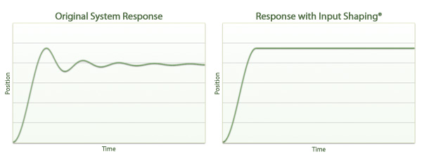

Optimized Trajectories for Motion Control
Convolve, Inc.
Convolve, Inc. is an engineering company that specializes in generating optimized trajectories to improve the performance of motion control systems. Trajectories generated by Convolve software can reduce the move and settle time for systems with oscillatory responses without the added expense of feedback transducers and complex feedback control algorithms. The following plots illustrate the benefit that can be achieved using Input Shaping®: Copyright Convolve, Inc. 2005 — 2007, All Rights Reserved.